File: 000330.gt.txt (if the image is defective, simply delete all Arabic text and the line will be excluded)
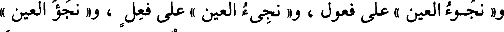
و« نجوء العين » على فعول ، و« نجيء العين » على فعل ، و« نجؤ العين »
File: 000331.gt.txt (if the image is defective, simply delete all Arabic text and the line will be excluded)
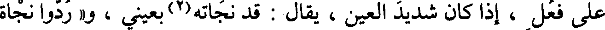
على فعل ، إذا كان شديد العين ، يقال : قد نجأته(2) بعيني ، و« ردوا نجأة
File: 000332.gt.txt (if the image is defective, simply delete all Arabic text and the line will be excluded)
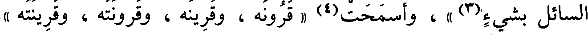
السائل بشيء(3) » ، وأسمحت(4) « قرونه ، وقرينه ، وقرونته ، وقرينته »
File: 000333.gt.txt (if the image is defective, simply delete all Arabic text and the line will be excluded)
باب ما جاء فيه خمس لغات
File: 000334.gt.txt (if the image is defective, simply delete all Arabic text and the line will be excluded)
من حروف مختلفة الأبنية
File: 000335.gt.txt (if the image is defective, simply delete all Arabic text and the line will be excluded)
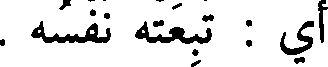
أي : تبعته نفسه .
File: 000336.gt.txt (if the image is defective, simply delete all Arabic text and the line will be excluded)
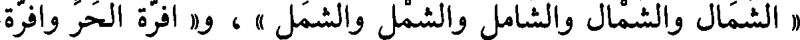
« الشمال والشمال والشامل والشمل والشمل » ، و« أفرة الحر وافرة
File: 000337.gt.txt (if the image is defective, simply delete all Arabic text and the line will be excluded)
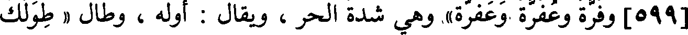
[599] وفرة وعفرة وعفرة» وهي شدة الحر ، ويقال : أوله ، وطال « طولك
File: 000338.gt.txt (if the image is defective, simply delete all Arabic text and the line will be excluded)
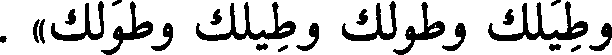
وطيلك وطولك وطيلك وطولك » .
File: 000339.gt.txt (if the image is defective, simply delete all Arabic text and the line will be excluded)
باب ما جاء فيه ست لغات
File: 000340.gt.txt (if the image is defective, simply delete all Arabic text and the line will be excluded)
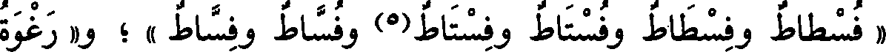
« فسطاط وفسطاط وفستاط وفستاط(5) وفساط وفساط » ؛ و« رغوة
File: 000341.gt.txt (if the image is defective, simply delete all Arabic text and the line will be excluded)
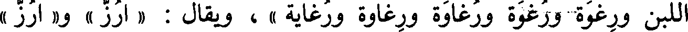
اللبن ورغوة ورغاوة ورغاوة ورغاية » ، ويقال : « أرز » و « أرز »
File: 000342.gt.txt (if the image is defective, simply delete all Arabic text and the line will be excluded)
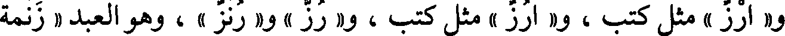
و« أرز » مثل كتب ، و« أرز » مثل كتب ، و« رز » و« رنز » ، وهو العبد « زنمة
File: 000343.gt.txt (if the image is defective, simply delete all Arabic text and the line will be excluded)
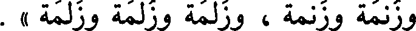
وزنمة وزنمة ، وزلمة وزلمة وزلمة » .
File: 000344.gt.txt (if the image is defective, simply delete all Arabic text and the line will be excluded)
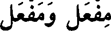
مفعل ومفعل
File: 000345.gt.txt (if the image is defective, simply delete all Arabic text and the line will be excluded)
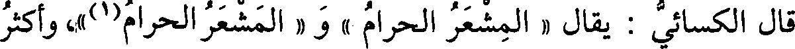
قال الكسائي : يقال « المشعر الحرام » و « المشعر الحرام(1)»، وأكثر
File: 000346.gt.txt (if the image is defective, simply delete all Arabic text and the line will be excluded)
العرب على كسرها ، ولا يقرأ بذلك(2) ، ولا يعرف(3) غير هذا الحرف .
File: 000347.gt.txt (if the image is defective, simply delete all Arabic text and the line will be excluded)
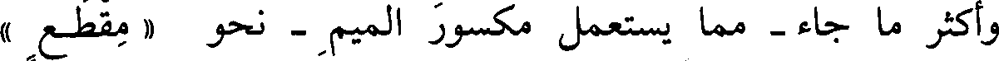
وأكثر ما جاء - مما يستعمل مكسور الميم - نحو « مقطع »
File: 000348.gt.txt (if the image is defective, simply delete all Arabic text and the line will be excluded)
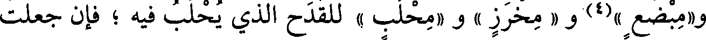
و«مبضع »(4) و « مخرز » و « محلب » للقدح الذي يحلب فيه ؛ فإن جعلت
File: 000349.gt.txt (if the image is defective, simply delete all Arabic text and the line will be excluded)
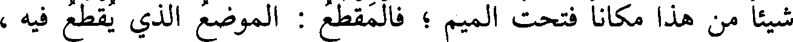
شيئا من هذا مكانا فتحت الميم ؛ فالمقطع : الموضع الذي يقطع فيه ،
File: 000350.gt.txt (if the image is defective, simply delete all Arabic text and the line will be excluded)
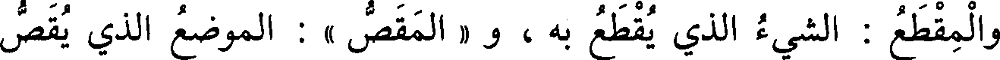
والمقطع : الشيء الذي يقطع به ، و « المقص » : الموضع الذي يقص
File: 000351.gt.txt (if the image is defective, simply delete all Arabic text and the line will be excluded)
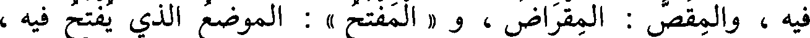
فيه ، والمقص : المقراض ، و « المفتح » : الموضع الذي يفتح فيه ،
File: 000352.gt.txt (if the image is defective, simply delete all Arabic text and the line will be excluded)
والمفتح : المفتاح ، وكذلك إن جعلت شيئا من هذا مصدرا فهو مفتوح .
File: 000353.gt.txt (if the image is defective, simply delete all Arabic text and the line will be excluded)
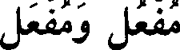
مفعل ومفعل
File: 000354.gt.txt (if the image is defective, simply delete all Arabic text and the line will be excluded)
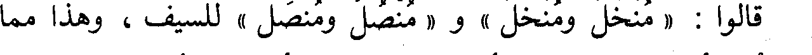
قالوا : « منخل ومنخل » و « منصل ومنصل » للسيف ، وهذا مما
File: 000355.gt.txt (if the image is defective, simply delete all Arabic text and the line will be excluded)
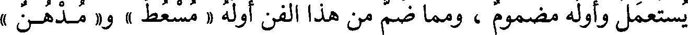
يستعمل وأوله مضموم ، ومما ضم من هذا الفن أوله « مسعط » و« مدهن »
File: 000356.gt.txt (if the image is defective, simply delete all Arabic text and the line will be excluded)
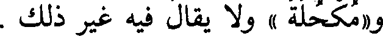
و«مكحلة » ولا يقال فيه غير ذلك .
File: 000357.gt.txt (if the image is defective, simply delete all Arabic text and the line will be excluded)
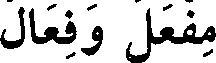
مفعل وفعال
File: 000358.gt.txt (if the image is defective, simply delete all Arabic text and the line will be excluded)
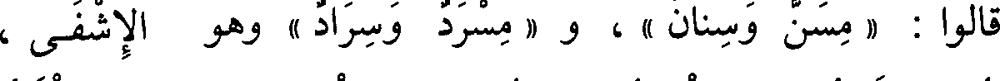
قالوا : « مسن وسنان » ، و « مسرد وسراد » وهو الإشفى ،
File: 000359.gt.txt (if the image is defective, simply delete all Arabic text and the line will be excluded)
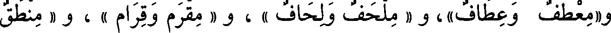
و«معطف وعطاف»، و « ملحف ولحاف » ، و « مقرم وقرام » ، و « منطق
To Save: `Ctrl+s`, make sure to choose `Webpage, complete`!